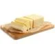
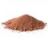

Receita de Brownie
- 5 colheres de manteiga
- 12 colheres de farinha de trigo
- 6 colheres de açúcar
- 3 xicara de achocolatado
- 3 ovos
Modo de preparo
- Derreta a manteiga e reserve
- Enquanto derrete a manteiga, misture os 3 ovos e a açúcar e misture bem
- Acrescente a manteiga derretida no ovo e o açúcar
- Agora é so misturar o achocolatado e o trigo
- Unte uma forma com manteiga e achocolatado
- Leve ao forno a 180° C por 30 minutos
Receitas para referência Receita de Brownie
Tabela Nutricional de Brownie
Informações Nutricionais
Porção com 75g
| |
100g |
75g |
%VD* |
| Valor energético (kcal) |
443 |
337 |
17 |
| Carboidratos (g) |
44 |
33 |
11 |
| Açúcares totais (g) |
34 |
26 |
|